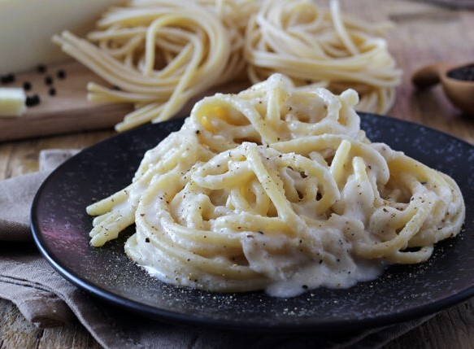

Cacio e pepe (or just cum)
This is a very yummy pasta, it's almost a carbonara but a bit lighter and it looks like it's made with cum (it's not)

Difficulty:medium
Time:30-40min
Kcal:bro it's not for a diet I'm sorry
Servings: 4 people
Ingredients
- 400g Spagott pasta
- black pepper
- 200g pecorino cheese (no you stupid dumb fuck you cannot use another type of cheese coz it's not cacio e pepe then)
Steps
- Put on the fire a pot with water to cook the pasta: fill it with about half of the water you usually use, this way it will be richer in starch. In the meantime, grate the pecorino
- Transfer the pecorino in a bowl, keeping some aside for serving.
- When the water has come to a boil, salt moderately and dip the spaghetti
- Grind the pepper if it's not already and put it in a non stick pan and toast it on low heat. Pour just a bit of the boiling water
- Take off the spaghetti 2-3mins before the time showed on the package and put them in the pan but keep some of the water
- Finish cooking them in the pan while stirring
- Now prepare the pecorino cream. Finely grate the pecorino in a bowl and then add a bit of the boiling water you used for the pasta. Whip vigorously
- Pour the cream in the pan when it's creamy but a bit pasty
- With low heat, adjust with more pecorino or more water for respectively more pastiness or more creaminess
- Serve with the remaining pecorino on top. You can add more pepper if you wish. If you have truffles, add a bit on top for extra wealth
homepage